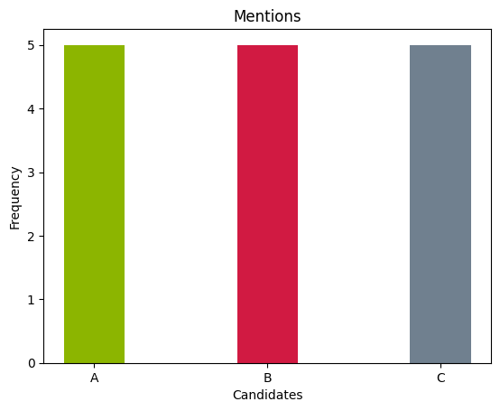
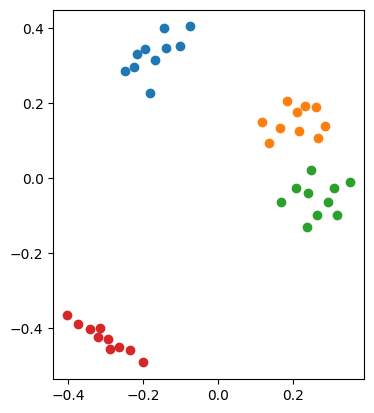
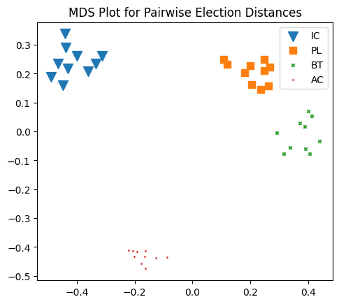

Some Plotting Options: Summary Statistics, Pairwise Comparison Graphs, and MDS Plots.¶
In this tutorial we will explore various plotting options included in votekit. To do so, we will not use real election data, but rather some generated preference profiles. votekit allows us to choose many different models of ballot generator.
For simplicity, let's start with the Impartial Culture model, which assumes that when there are \(m\) candidates, a voter casts a ballot by choosing uniformly at random from the \(m!\) total linear orderings of the candidates.
import votekit.ballot_generator as bg
from votekit.plots import plot_summary_stats, plot_MDS, compute_MDS
from votekit.graphs import PairwiseComparisonGraph
from votekit.metrics import earth_mover_dist, lp_dist
from votekit.pref_interval import PreferenceInterval
from functools import partial
import matplotlib.pyplot as plt
# the list of candidates
candidates = ["A", "B", "C"]
# initializing the ballot generator
ic = bg.ImpartialCulture(candidates=candidates)
# generate 5 ballots under the IC model
number_of_ballots = 5
profile = ic.generate_profile(number_of_ballots)
# since this is a small preference profile, we can print the entire thing
print(profile)
Ballots Weight
(A, C, B) 2
(C, A, B) 1
(C, B, A) 1
(B, C, A) 1
votekit comes with some basic summary statistics to help you analyze a profile. We can plot the number of first place votes each candidate received, the number of mentions they receive (i.e. the total number of times they appeared on a ballot), and a Borda count, which assigns \(n-1\) points to the first place winner of a ballot, \(n-2\) to the second place, ..., and 0 to the last place winner of a ballot.
fig = plot_summary_stats(profile, "first place votes", multi_color = False, title = "First Place Votes")
fig = plot_summary_stats(profile, "borda", multi_color = False, title = "Borda Scores")
fig = plot_summary_stats(profile, "mentions", multi_color = True, title = "Mentions")



Check for understanding: In the IC model we are using, why is the number of mentions uniform?
Graphs!¶
There are two kinds of graphs (networks) that votekit generates, a pairwise comparison graph, and a ballot graph. The former has vertices=candidates, and an edge going from A to B if A is preferred to B more often in the given preference profile. The edge is given weight equal to the number of times A is preferred to B minus the number of times B is preferred to A. We'll discuss ballot graphs in a later tutorial.
PairwiseComparisonGraph¶
PairwiseComparisonGraph takes in a PreferenceProfile. There is an optional ballot_length parameter that determines the length of the ballot and then the PairwiseComparisonGraph graph will randomly fill in any ballots that are too short. Since we are using IC ballots which have a full linear ranking, we don't need to worry about that.
pwc_graph = PairwiseComparisonGraph(profile)
pwc_graph.draw()

Check for understanding: are the edge weights what you expect given your PreferenceProfile?
PairwiseComparisonGraph has methods for computing dominating tiers and the existence of a condorcet winner. A dominating tier is a group of candidates that beats every candidate not in the set in a head-to-head comparison. A condorcet winner is a candidate who wins every head-to-head contest with every other candidate.
print(pwc_graph.dominating_tiers())
print()
print(pwc_graph.has_condorcet_winner())
[{'C'}, {'A'}, {'B'}]
True
MDS Plots¶
One of the cool features of votekit is that we can create MDS plots, using different notions of distance between preference profiles. An MDS plot, in short, is a 2D representation of high dimensional data that attempts to minimize the distortion of the data. votekit comes with two distance metrics, the earthmover distance and the \(L_p\) distance.
Let's explore how an MDS plot can show us the difference between different types of ballot generating models. We will explain what these generating models are doing in a different tutorial.
number_of_ballots = 1000
candidates = ["W1", "W2", "C1", "C2"]
slate_to_candidate = {"W": ["W1", "W2"], "C": ["C1", "C2"]}
cohesion_parameters = {"W":{"W": .7, "C":.3},
"C":{ "C": .6, "W":.4}}
pref_intervals_by_bloc = {
"W": {"W": PreferenceInterval({"W1": 0.4, "W2": 0.3}),
"C": PreferenceInterval({"C1": 0.2, "C2": 0.1})},
"C": {"W": PreferenceInterval({"W1": 0.2, "W2": 0.2}),
"C": PreferenceInterval({"C1": 0.3, "C2": 0.3})}
}
bloc_voter_prop = {"W": 0.7, "C": 0.3}
ic = bg.ImpartialCulture(candidates=candidates)
pl = bg.name_PlackettLuce(pref_intervals_by_bloc=pref_intervals_by_bloc,
bloc_voter_prop=bloc_voter_prop, candidates=candidates,
cohesion_parameters=cohesion_parameters)
bt = bg.name_BradleyTerry(pref_intervals_by_bloc=pref_intervals_by_bloc,
bloc_voter_prop=bloc_voter_prop, candidates=candidates,
cohesion_parameters=cohesion_parameters)
ac = bg.AlternatingCrossover(pref_intervals_by_bloc=pref_intervals_by_bloc,
bloc_voter_prop=bloc_voter_prop, candidates=candidates,
slate_to_candidates=slate_to_candidate, cohesion_parameters=cohesion_parameters)
compute_MDS takes in a data parameter, which is a dictionary whose keys are labels and whose values are a particular list of PreferenceProfiles, and a distance parameter that sets the metric between preference profiles. Since computing these coordinates is the most time intensive part of the process, it has been decoupled from plot_mds which simply takes the output of compute_MDS and plots the data.
comput_MDS also comes with an optional random_seed parameter that allows for MDS replication.
# this allows us to generate 10 preference profiles under each ballot generator
mds_coords = compute_MDS(data = {'IC': [ic.generate_profile(number_of_ballots) for i in range(10)],
'PL': [pl.generate_profile(number_of_ballots) for i in range(10)],
'BT': [bt.generate_profile(number_of_ballots) for i in range(10)],
'AC': [ac.generate_profile(number_of_ballots) for i in range(10)]
}, distance = earth_mover_dist)
plot = plot_MDS(mds_coords, legend=True, title=True)
plt.show()

Let's try a different metric.
# this allows us to generate 10 preference profiles under each ballot generator
mds_coords = compute_MDS(data = {'IC': [ic.generate_profile(number_of_ballots) for i in range(10)],
'PL': [pl.generate_profile(number_of_ballots) for i in range(10)],
'BT': [bt.generate_profile(number_of_ballots) for i in range(10)],
'AC': [ac.generate_profile(number_of_ballots) for i in range(10)]
}, distance = lp_dist)
plot = plot_MDS(mds_coords, legend=False, title=False)
plt.show()

By default, the \(L_p\) distance function uses \(p=1\). If you want to change that, we need the partial function from the functools module.
# this allows us to generate 10 preference profiles under each ballot generator
mds_coords = compute_MDS(data = {'IC': [ic.generate_profile(number_of_ballots) for i in range(10)],
'PL': [pl.generate_profile(number_of_ballots) for i in range(10)],
'BT': [bt.generate_profile(number_of_ballots) for i in range(10)],
'AC': [ac.generate_profile(number_of_ballots) for i in range(10)]
}, distance = partial(lp_dist, p_value=2))
plot = plot_MDS(mds_coords, legend=False, title=False)
plt.show()

Finally, to use the \(L_\infty\) distance, use the keyword inf.
# this allows us to generate 10 preference profiles under each ballot generator
mds_coords = compute_MDS(data = {'IC': [ic.generate_profile(number_of_ballots) for i in range(10)],
'PL': [pl.generate_profile(number_of_ballots) for i in range(10)],
'BT': [bt.generate_profile(number_of_ballots) for i in range(10)],
'AC': [ac.generate_profile(number_of_ballots) for i in range(10)]
}, distance = partial(lp_dist, p_value="inf"))
plot = plot_MDS(mds_coords, legend=False, title=False)
plt.show()

We can also add optional plotting parameters as follows. These get passed to matplotlib scatter.
# this allows us to generate 10 preference profiles under each ballot generator
mds_coords = compute_MDS(data = {'IC': [ic.generate_profile(number_of_ballots) for i in range(10)],
'PL': [pl.generate_profile(number_of_ballots) for i in range(10)],
'BT': [bt.generate_profile(number_of_ballots) for i in range(10)],
'AC': [ac.generate_profile(number_of_ballots) for i in range(10)]
}, distance = earth_mover_dist)
plot_kwarg_dict = {"IC": {"marker": "v", "s": 100},
"PL": {"marker": "s", "s": 50},
"BT": {"marker": "x", "s": 10},
"AC": {"marker": "d", "s": 1}}
plot = plot_MDS(mds_coords, plot_kwarg_dict= plot_kwarg_dict, legend=True, title=True)
plt.show()
